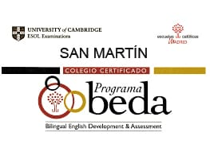
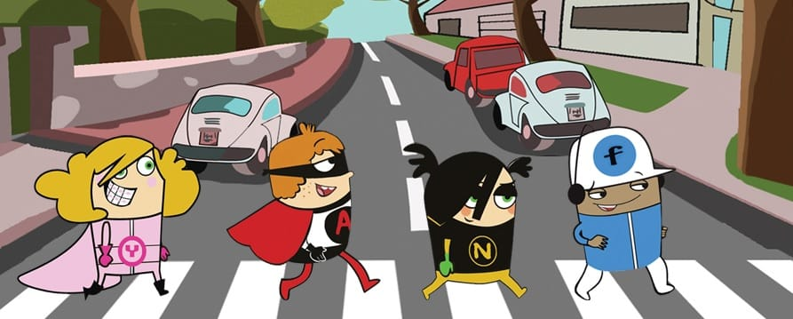

Inglés
Centro examinador de la University of Cambridge, centro certificado BEDA y método Vaughan en Primaria.
Cambridge
Centro examinador University of Cambridge
Los exámenes de Cambridge se incorporan al Proyecto de actividades y se van desarrollando junto a los programas de enseñanza, desde Primaria hasta E.S.O.
BEDA
Colegio certificado del programa BEDA
Desde el curso 2012-1013, el Colegio San Martín es un Centro Certificado del Programa BEDA (Bilingual English Developement & Assessment).
BEDA es un programa flexible, que ayuda eficazmente a la mejora de la enseñanza del inglés, siempre en coherencia con la calidad del resto de las enseñanzas y del Proyecto Educativo y valores del Colegio.
Consiste en una implantación gradual de la enseñanza bilingüe Español-Inglés en el Colegio reforzando y ampliando determinados aspectos de la vida educativa lingüística del Currículo y del entorno escolar.
- Incremento cualitativo y cuantitativo de la enseñanza del inglés.
- Formación específica del profesorado.
- Evaluación externa con Cambridge para alumnos, profesores y personal del centro.
La implantación del Programa se hace principalmente en cuatro etapas, que se van alcanzando según se amplía el nivel de enseñanza del inglés en el Centro.

Vaughan
Mission Accomplished with Vaughan
Is a six-year Primary course for advanced level English classes. In this textbook, we incorporate key elements of the Vaughan method, placing special emphasis on student's speaking and listening skills. Taking advantage of a variety of materials, we provide pupils with a learning experience that is both fun and focused, presenting them with interesting topics to talk about, stimulating activities to participate in, catchy tunes to sing along to and entertaining stories and videos.
One of the main goals of Mission Accomplished with Vaughan is to develop students' self-confidence with English. This aim is achieved through practice with listening and speaking, two of the most important elements of language learning with the Vaughan method.

¿Quiere conocer el colegio?
Puede llamarnos, escribirnos o pedir cita previa para visitar el centro. El plazo ordinario de solicitud de plaza es del 11 al 25 de marzo.